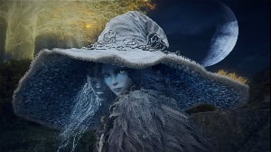

Ranni the Witch is the only daughter of Radagon of the Golden Order and his first wife Rennala, Queen of the Full Moon. She's also one of the most significant demigods in Elden Ring, with an entire storyline and ending dedicated to her. Prior to the game, she was the Lunar Princess Ranni, a key member of Marika's dynasty and an Empyrean – one of the three demigods marked as a potential successor to Marika. (https://www.cbr.com/every-demigod-elden-ring-explained/)
Quotes on Ranni
"I am the witch Ranni. I stole Death long ago, and search now for the dark path. That I might one day upend the whole of it, and rid the world of all that came before."
"Forgive mine intrusion, Tarnished.
I doubt we shall again meet. But all the same, learn well the Lands Between.
How long will it be, I wonder...
Before the Tarnished tire of obesiance to the Two Fingers?"